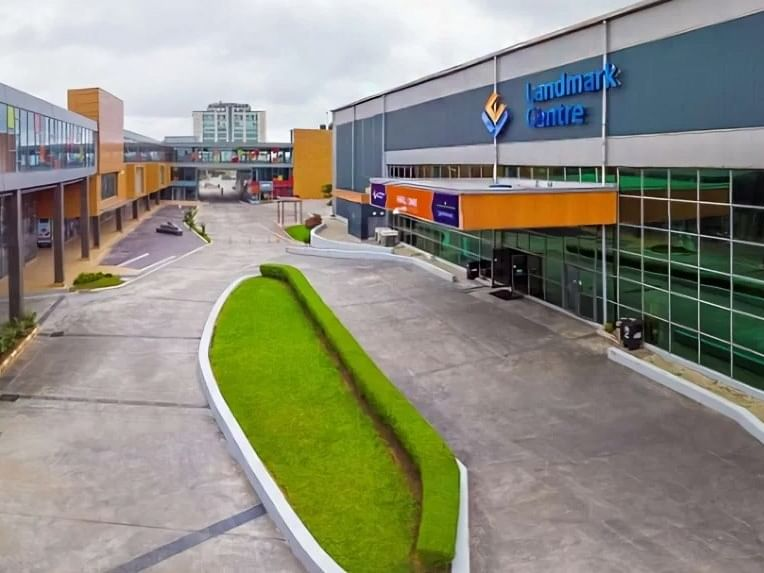

Venue and Travel Information
Everything you need to know to get to the conference and settle in comfortably.
Our Venue
Landmark CentreWater Corporation Drive,
Oniru, Victoria Island,
Lagos, Nigeria 101241
Phone: +234 1 234 5678
Email: events@landmarkcentre.com.ng
Website: www.landmarkcentre.com.ng
Location on the Map
Landmark Centre is located on Water Corporation Drive, Oniru, Victoria Island - one of Lagos's most accessible event destinations.
Venue Photos



Conference Highlight Reel
Conference Highlight Reel
Watch the official recap:
Watch Full Reel on Instagram
👤 Follow on Instagram